1898 - Primo Campionato ufficiale
https://it.wikipedia.org/wiki/Campionato_Italiano_di_Football_1898
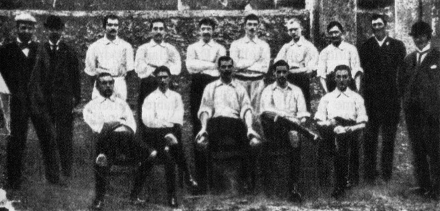
Gli esordi - Il Genoa domina i primi Campionati
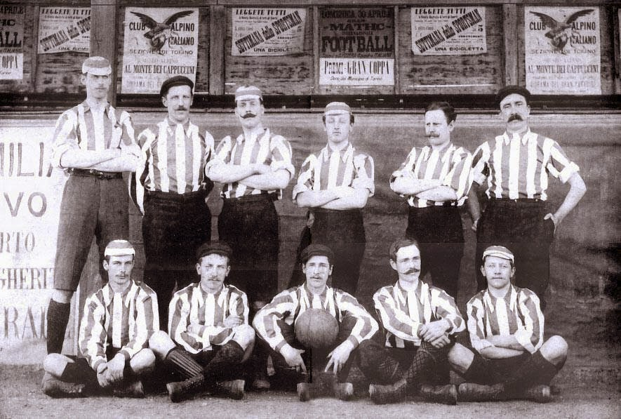
1905 - Si adotta la denominazione di "Prima Categoria"
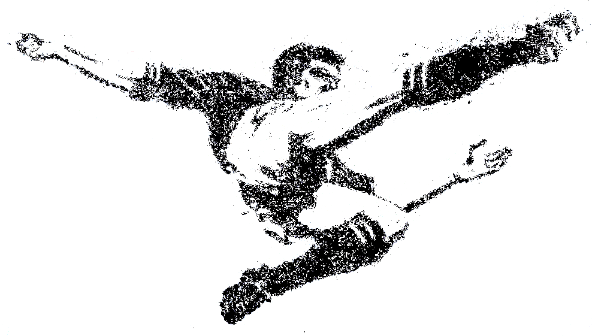
1908/1909 - Il Campionato di sdoppia con i due titoli di
"Campione d'Italia" e "Campione Federale d'Italia"
1910-1912 - La Pro Vercelli approfitta della "Crisi dei due Campionati"
e fa man bassa di titoli
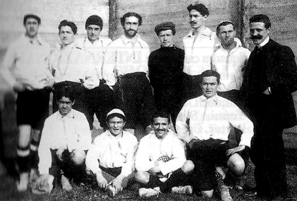
1913/1914 - Il Casale è vincitore del Campionato
https://it.wikipedia.org/wiki/Football_Club_Casale
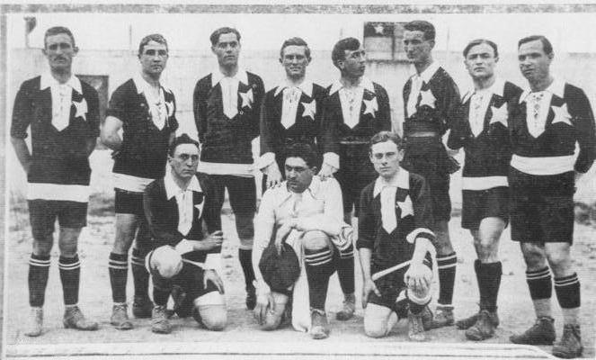
1915 - Sospensione del Campionato per l'intervento Italiano nella Prima Guerra Mondiale
(Genoa vincitore a tavolino)
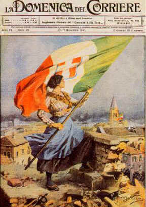
1922 - La Novese vince in "Prima categoria",
la Pro Vercelli trionfa in "Prima divisione"
1923/1924 - "Compromesso Colombo" risoluzione della
"Crisi dei due Campionati"
https://it.wikipedia.org/wiki/Compromesso_Colombo
1923/1924 - Ultimo trionfo per il Genoa
Lo Scudetto diventa il simbolo dei vincitori del Campionato
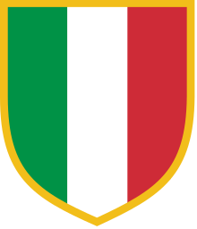
1925/1926 - Scudetto alla Juventus che ora sotto la guida Agnelli
ha adottato nuovi criteri manageriali ed imprenditoriali
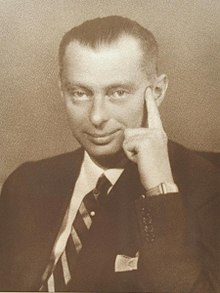
1926/1927 - Il Caso Allemandi e revoca dello scudetto vinto dal Torino
https://it.wikipedia.org/wiki/Caso_Allemandi
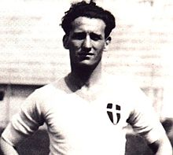
1929-1930 - Denominazione ufficiale di "Seria A" e formula a girone unico
https://it.wikipedia.org/wiki/Campionato_Italiano_di_Football_1898
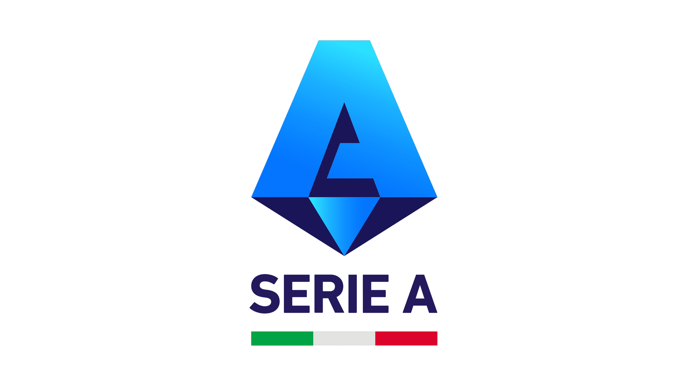
1930-1934 - La Juventus del "Trio dei ragionieri" vince 5 scudetti di fila
https://it.wikipedia.org/wiki/Trio_dei_ragionieri
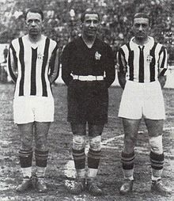
1935-1937 - Il momento del Bologna che "tremare il mondo fa"
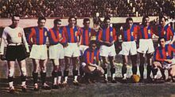
1937-1940 - Gli anni della sfida tra il Bologna e l'Inter
1941/1942 - Il primo Scudetto alla Roma (prima volta per una squadra del Sud)
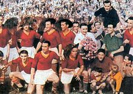
1943-1948 - Il "Grande Torino"
https://it.wikipedia.org/wiki/Grande_Torino

1949 - La Tragedia di Superga
https://it.wikipedia.org/wiki/Tragedia_di_Superga
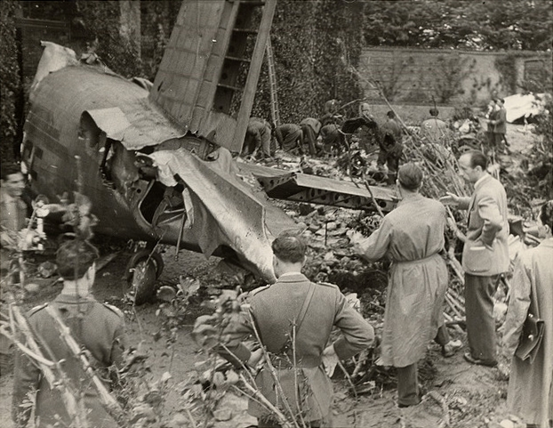
Anni '50 - Il dominio delle "tre grandi": Inter, Juventus e Milan
1955/1956 - Primo scudetto della Fiorentina
1957/1958 - Decimo scudetto della Juventus: e "stella" permanente sulla sua maglia
1963/1964 - Spareggio Inter-Bologna per decidere il vincitore: il Bologna ne esce vittorioso
1965/1966 - E' la volta della "Grande Inter", che ottiene il decimo scudetto
1969/1970 - Storico scudetto del Cagliari
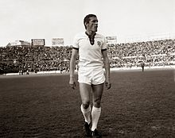
1973/1974 - Primo Scudetto della Lazio
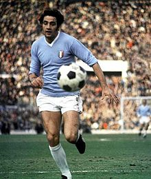
1975/1976 - Il Torino dei "Gemelli del gol" riconquista lo Scudetto
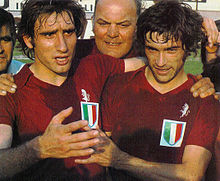
1978/1979 - Decimo Scudetto del Milan
1980 - Scandalo italiano del Calcioscommesse (Totonero)
https://it.wikipedia.org/wiki/Scandalo_italiano_del_calcioscommesse_del_1980
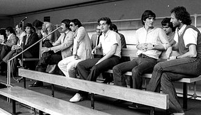
1981/1982 - La Juventus ottiene il suo ventesimo Scudetto
1984/1985 - Il Verona ottiene il suo primo Scudetto
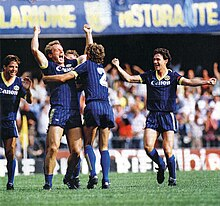
1986/1987 - Il Napoli ottiene il suo primo Scudetto
1988/1989 - Scudetto dei Record per l'Inter
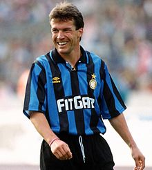
1990/1991 - I "gemelli del gol" portano lo Scudetto alla Sampdoria
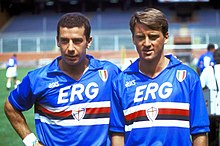
1991/1992 - Il Milan degli "Invincibili"
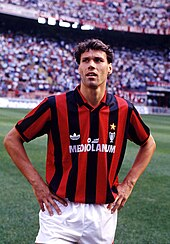
1994/1995 - Si adotta la regola dei tre punti a vittoria
1996/1997 - Sentenza Bosmann
https://it.wikipedia.org/wiki/Sentenza_Bosman
2004-2005 - Calciopoli e revoca dello Scudetto 2004/2005 alla Juventus
https://it.wikipedia.org/wiki/Calciopoli
2005-2010 - L'Inter approfitta degli effetti di Calciopoli
2011-2020 - Il ritorno della Juventus
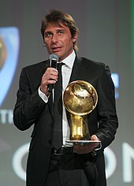
2022/2023 - Terzo scudetto del Napoli
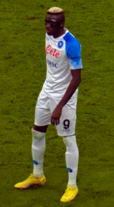